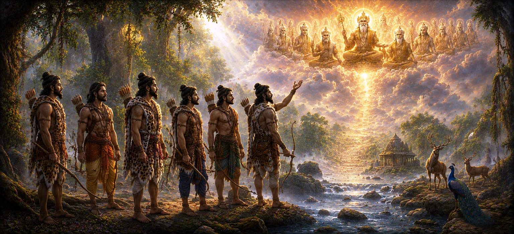

सात शिकारियों की प्राप्ति
अध्याय 40 में पितरों की शक्ति और महिमा पर गहन प्रवचन के बाद, उमा संहिता का इकतालीसवाँ अध्याय परिवर्तन की एक प्रेरक कथा को उजागर करता है: सात शिकारियों की आध्यात्मिक प्राप्ति और अंतिम मुक्ति।
यह अध्याय दर्शाता है कि दैवीय कृपा जन्म या व्यवसाय की कोई बाधा नहीं जानती, यह दर्शाता है कि कैसे सामान्य शिकारियों ने गहरी जागृति और भगवान शिव की भक्ति के माध्यम से अपनी सीमाओं को पार किया।
उनकी कहानी के माध्यम से, ग्रंथ सार्वभौमिक आशा का संदेश देता है, यह साबित करता है कि ईमानदारी से पश्चाताप और समर्पण उच्चतम आध्यात्मिक प्राप्ति के द्वार खोलता है।
अध्याय 41 की मुख्य बातें
विनम्र शुरुआत
जंगल के जंगल में रहने वाले सात शिकारियों के जीवन का परिचय देता है।
आंतरिक जागृति
चेतना में अचानक बदलाव का विवरण जिसने उनके दिलों को सच्चाई की ओर पुनर्निर्देशित किया।
पश्चाताप और पवित्रता
यह दर्शाता है कि पिछले कार्यों के लिए पश्चाताप ने कैसे उनके मन को उच्च उद्देश्यों के लिए शुद्ध कर दिया।
वन साधना
एकांत में उनकी समर्पित तपस्या और चिंतन का वर्णन करता है।
ईश्वरीय कृपा
इस बात पर प्रकाश डाला गया है कि भगवान शिव की करुणा उनकी सच्ची भक्ति पर कैसे उतरी।
परम मुक्ति
शाश्वत शांति और दिव्य प्रकाश में उनके आरोहण के साथ समाप्त होता है।
इस अध्याय में मुख्य विषय
- 01 सात शिकारियों का जीवन और पृष्ठभूमि →
- 02 आंतरिक जागृति के लिए उत्प्रेरक →
- 03 पिछले कर्मों और कर्मों के बोझ का एहसास →
- 04 भगवान शिव के चरणों की ओर मुड़ना →
- 05 जंगल में तपस्वी अनुशासन अपनाना →
- 06 विश्वास और अटल दृढ़ता की परीक्षा →
- 07 सर्वोच्च दिव्य कृपा का अवतरण →
- 08 पूर्ण परिवर्तन और आत्मा मुक्ति →
- 09 भक्ति में समावेशिता का सार्वभौमिक पाठ →
- 10 पितरों की शक्ति में परिवर्तन →
सात शिकारियों का जीवन और पृष्ठभूमि
अध्याय 41 गहरे जंगलों में रहने वाले शिकारी समुदाय में पैदा हुए सात लोगों का परिचय देकर शुरू होता है, जिनका दैनिक अस्तित्व अस्तित्व, शिकार और सांसारिक लगाव के आसपास घूमता था।
हालाँकि वे भव्य शास्त्रों के अध्ययन या जटिल वैदिक अनुष्ठानों से अनभिज्ञ थे, फिर भी उनके दिलों में अंतर्निहित कच्ची सादगी और गहन ध्यान केंद्रित करने की क्षमता थी।
हालाँकि, भाग्य ने उनके लिए एक गहन आध्यात्मिक मोड़ निर्धारित किया था।
आंतरिक जागृति के लिए उत्प्रेरक
पवित्र ज्ञान के साथ मुठभेड़ या अचानक दैवीय प्रेरणा के माध्यम से, सात शिकारियों के दिमाग में एक गहरा बदलाव आया, जिससे उनकी अज्ञानता का पर्दा टूट गया।
उन्होंने अपने कार्यों की क्षणिक प्रकृति और अपने कार्यों के कारण होने वाली पीड़ा पर सवाल उठाना शुरू कर दिया, जिससे उच्च सत्य के लिए तीव्र इच्छा जागृत हुई।
जागृति के इस क्षण ने उनकी आध्यात्मिक यात्रा की सच्ची शुरुआत को चिह्नित किया।
पिछले कर्मों और कर्मों के बोझ का एहसास
पश्चाताप से अभिभूत होकर, शिकारियों ने अपने द्वारा ली गई जिंदगियों के कर्म भार और उस आध्यात्मिक नींद को पहचान लिया जिसमें वे जी रहे थे।
निराश होने के बजाय, उन्होंने इस पश्चाताप को अपनी आत्मा को शुद्ध करने और सर्वोच्च प्रभु के चरणों में मुक्ति पाने के एक शक्तिशाली दृढ़ संकल्प में बदल दिया।
उनका पश्चाताप वह आग बन गया जिसने उनकी पिछली अशुद्धियों को जला दिया।
भगवान शिव के चरणों की ओर मुड़ना
पाठ में वर्णन किया गया है कि कैसे शिकारियों ने अपनी भक्ति को पूरी तरह से पुनर्निर्देशित किया, अपने पुराने तरीकों को त्याग दिया और अपने मन को भगवान शिव के कमल चरणों में दृढ़ता से केंद्रित किया।
उन्होंने ध्यान, पवित्र मंत्रों का जाप और करुणा के स्वामी को जो कुछ भी शुद्ध इरादा था उसे अर्पित करने की शरण ली।
सच्चे समर्पण से प्रसन्न होकर शिव ने उन पर कृपा दृष्टि डाली।
जंगल में तपस्वी अनुशासन अपनाना
जंगल की गहराई में, सात शिकारियों ने एक कठोर तपस्वी दिनचर्या स्थापित की, उपवास किया, अपनी इंद्रियों को नियंत्रित किया और महादेव के दिव्य रूप पर अथक ध्यान किया।
उनका एक बार बेचैन मन, जंगल की कठोर परिस्थितियों या आंतरिक शंकाओं से विचलित हुए बिना, भक्ति के शांत भंडार बन गया।
उनका अभ्यास परिस्थितियों पर इच्छाशक्ति की विजय का उदाहरण है।
विश्वास और अटल दृढ़ता की परीक्षा
जैसे-जैसे उनकी साधना गहरी होती गई, शिकारियों को उनके संकल्प की परीक्षा लेने के लिए विभिन्न परीक्षणों का सामना करना पड़ा, लेकिन उनका विश्वास पर्वत शिखर की तरह अटल रहा।
उन्होंने दैवीय स्रोत के साथ एकता प्राप्त करने के एक लक्ष्य को साझा करते हुए, हर कठिनाई में एक-दूसरे का समर्थन किया।
उनकी सामूहिक भक्ति ने उनकी व्यक्तिगत आध्यात्मिक शक्ति को बढ़ाया।
सर्वोच्च दिव्य कृपा का अवतरण
उनकी असाधारण दृढ़ता और शुद्ध प्रेम से प्रेरित होकर, भगवान शिव सात शिकारियों के सामने प्रकट हुए, जिससे चकाचौंध कर देने वाली, परोपकारी रोशनी फैल गई।
दिव्य उपस्थिति ने उनके पिछले कर्मों के सभी शेष निशानों को मिटा दिया, जिससे उनके दिल सर्वोच्च शांति और शाश्वत आनंद से भर गए।
अनुग्रह उनके अटूट समर्पण को पुरस्कृत करने के लिए अवतरित हुआ।
पूर्ण परिवर्तन और आत्मा मुक्ति
कथा सात शिकारियों की मुक्ति में समाप्त होती है, जो अपनी नश्वर सीमाओं को छोड़कर सीधे शिव के उच्चतम दिव्य निवास में चढ़ गए।
सामान्य वनवासियों से प्रकाशमान मुक्त आत्माओं में उनका परिवर्तन भक्ति की शक्ति का एक पौराणिक प्रमाण बन गया।
महादेव की कृपा से उन्हें अमरत्व प्राप्त हुआ।
भक्ति में समावेशिता का सार्वभौमिक पाठ
धर्मग्रंथ इस बात पर प्रकाश डालता है कि यह कहानी पूरी मानवता के लिए एक शाश्वत प्रकाशस्तंभ के रूप में कार्य करती है, जो यह साबित करती है कि आध्यात्मिक अनुभूति किसी भी ऐसे व्यक्ति के लिए खुली है जो सच्चे दिल से भगवान की ओर मुड़ता है।
सामाजिक पृष्ठभूमि, पिछली गलतियाँ, या विद्वतापूर्ण शिक्षा की कमी कोई बाधा नहीं है जहाँ शिव के प्रति सच्चा प्रेम और समर्पण मौजूद है।
ईश्वरीय कृपा परिवर्तन की इच्छुक हर आत्मा को गले लगाती है।
पितरों की शक्ति में परिवर्तन
अध्याय 41 में सात शिकारियों की उपलब्धि की प्रेरक कहानी साझा करने के बाद, कथा पैतृक शक्तियों के आसपास की पवित्र चर्चाओं पर लौटने की तैयारी करती है।
पाठ अध्याय 42 के लिए मंच तैयार करता है, जो पितरों की महिमा और आध्यात्मिक अधिकार पर और विस्तार करेगा।
पाठकों को दिव्य ज्ञान के अगले आयाम में आसानी से मार्गदर्शन किया जाता है।
अध्याय 41 की मुख्य शिक्षाएँ
सार्वभौमिक पहुंच
ईश्वरीय कृपा सामाजिक पृष्ठभूमि की परवाह किए बिना सभी प्राणियों के लिए सुलभ है।
पश्चाताप की शक्ति
पिछले दुष्कर्मों के लिए सच्चा पश्चाताप मन को उच्च आध्यात्मिक कार्यों के लिए शुद्ध करता है।
दृढ़ साधना
कठोर अनुशासन और केंद्रित ध्यान सबसे गहरी कर्म बाधाओं पर भी विजय प्राप्त करता है।
शिव को समर्पण करो
भगवान शिव के प्रति पूर्ण समर्पण नश्वर सीमाओं को समाप्त करता है और अमरता प्रदान करता है।
सामूहिक भक्ति
एक साथ सत्य की खोज व्यक्तिगत आध्यात्मिक संकल्प और दृढ़ता को बढ़ाती है।
परिवर्तन
सामान्य जीवन अटूट भक्ति के माध्यम से सर्वोच्च ज्ञान प्राप्त कर सकता है।
आध्यात्मिक चिंतन
अध्याय 41 एक शक्तिशाली अनुस्मारक के रूप में खड़ा है कि कोई भी आत्मा कभी भी मुक्ति से परे या दिव्य परिवर्तन में असमर्थ नहीं है। सात शिकारियों की कहानी हमें सिखाती है कि आध्यात्मिक विकास विशेषाधिकार प्राप्त या विद्वान लोगों के लिए आरक्षित नहीं है, बल्कि उन सभी के लिए है जिनके दिल में सच्ची जागृति और अडिग भक्ति है। अज्ञानता से दूर होकर, पिछले दोषों पर पश्चाताप करके और अपने मन को भगवान शिव के कमल चरणों में स्थापित करके, हम भी अपनी सीमाओं को तोड़ सकते हैं और मुक्ति की सर्वोच्च शांति प्राप्त कर सकते हैं। यह कथा हमें आश्वस्त करती है कि दैवीय कृपा हमारे इरादे की शुद्धता पर सीधे प्रतिक्रिया करती है, प्रत्येक साधक का सत्य के शाश्वत प्रकाश में स्वागत करती है।
अध्याय 41 का संदेश जीना
अयोग्यता की किसी भी भावना को त्यागें, यह याद रखें कि आध्यात्मिक विकास उन सभी के लिए खुला है जो ईमानदारी से परमात्मा की तलाश करते हैं।
अपने मन से अतीत की नकारात्मक प्रवृत्तियों को हटाकर उन्हें भक्ति से बदलने के लिए दैनिक आत्म-चिंतन और पश्चाताप का अभ्यास करें।
अपने मन को भगवान शिव की याद में स्थिर रखें, उनकी अनंत करुणा पर भरोसा रखें कि वह जीवन की सभी परीक्षाओं में आपका मार्गदर्शन करेगी।
प्रमुख आध्यात्मिक अवधारणाएँ
शिकारियों को कृपा से आध्यात्मिक उपलब्धि और मुक्ति प्राप्त हुई।
अचानक आंतरिक जागृति जो आत्मा को उच्च सत्य की ओर पुनर्निर्देशित करती है।
सच्चा पश्चाताप जो पिछले कर्मों को शुद्ध करता है और साधक के मन को शुद्ध करता है।
जंगल में कठोर तपस्वी अनुशासन और ध्यान का अभ्यास किया गया।
मुक्ति और अमरता प्रदान करने वाली भगवान शिव की सर्वोच्च दिव्य कृपा।
नश्वर अस्तित्व से पूर्ण मुक्ति और दिव्य स्रोत के साथ मिलन।
अध्याय सारांश
उमा संहिता अध्याय 41 उन सात शिकारियों की प्रेरणादायक और परिवर्तनकारी यात्रा का वर्णन करता है, जिन्होंने सांसारिक लगाव के जीवन से सर्वोच्च आध्यात्मिक मुक्ति की ओर कदम बढ़ाया। आंतरिक जागृति, सच्चे पश्चाताप और जंगल में कठोर तपस्वी अनुशासन के माध्यम से, उन्होंने अपने दिलों को पूरी तरह से भगवान शिव की ओर मोड़ दिया। उनकी अटूट भक्ति से प्रेरित होकर, शिव ने उन पर अपनी कृपा की, उनके कर्म बंधनों को भंग कर दिया और उन्हें शाश्वत दिव्य निवासों में स्थापित कर दिया। यह अध्याय सार्वभौमिक संदेश को पुष्ट करता है कि ईश्वरीय कृपा सभी ईमानदार साधकों का, उनकी पृष्ठभूमि की परवाह किए बिना, स्वागत करती है, और अध्याय 42 में एक सहज परिवर्तन प्रदान करती है।
अक्सर पूछे जाने वाले प्रश्न
① उमा संहिता अध्याय 41 का मुख्य विषय क्या है?
मुख्य विषय भगवान शिव की कृपा से सात शिकारियों का प्रेरक आध्यात्मिक परिवर्तन, प्राप्ति और अंतिम मुक्ति है।
② अध्याय 41 अध्याय 40 का अनुसरण कैसे करता है?
अध्याय 40 के बाद जो पितरों की शक्ति और महिमा की पड़ताल करता है, अध्याय 41 एक विशिष्ट कथा में परिवर्तित होता है जो दर्शाता है कि कैसे सामान्य या हाशिए पर रहने वाले प्राणी सर्वोच्च आध्यात्मिक ऊंचाइयों को प्राप्त कर सकते हैं।
③ इस कथा में सात शिकारी कौन हैं?
सात शिकारी ऐसे पात्र हैं जो गहन आंतरिक जागृति से गुजरते हैं, अपने सांसारिक बंधनों को त्यागते हैं और अपने दिलों को सर्वोच्च भक्ति में स्थापित करते हैं।
④ शिकारियों की आध्यात्मिक उपलब्धि किस कारण हुई?
उनकी प्राप्ति सच्चे पश्चाताप, पवित्र अंतर्दृष्टि के साथ जुड़ाव और दैवीय कृपा के प्रति पूर्ण समर्पण से हुई।
⑤ अध्याय 41 अध्याय 42 से कैसे जुड़ता है?
अध्याय 41 अध्याय 42 में एक पुल के रूप में कार्य करता है, जो पितरों की शक्ति के आगे के अन्वेषणों की ओर लौटता है।
⑥ सात शिकारियों की कहानी का मूल संदेश क्या है?
मूल संदेश यह है कि दैवीय कृपा पृष्ठभूमि की परवाह किए बिना सभी प्राणियों के लिए सुलभ है, बशर्ते उनकी भक्ति सच्ची और अडिग हो।
"ईमानदारी से भक्ति और बिना शर्त समर्पण सभी कर्म संबंधी सीमाओं को समाप्त कर देता है, जिससे सर्वोच्च मुक्ति का द्वार खुल जाता है।"
उमा संहिता के माध्यम से जारी रखें
अध्याय 41 सात शिकारियों की प्रेरक उपलब्धि की पड़ताल करता है। इस अध्याय के समाप्त होने के साथ, पितरों की शक्ति का पता लगाने के लिए अध्याय 42 में आगे बढ़ें।